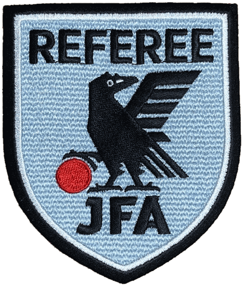

先妻をがんで亡くしたあと、まだ小さかった息子を、私は父母の手を借りながら育てました。振り返れば、正しい育児だったとはとても言えません。それでも、健康で、普通の人生を歩めるようにと、できる限りのことはしたつもりです。その日々の一部は、連載小説『至誠の覚醒』のどこかに書き留めたかもしれません。
息子が小学生になったとき、何かクラブに入れてやりたいと考えました。選んだのは、当時から人気が高まっていたサッカーです。通っていた小学校のクラブチームでした。
結局、私自身も六年ほど練習に付き合うことになり、そのうちに審判員の資格を取りました。いまもサッカーとフットサルの3級審判員の資格を持っています。2級、1級と上を目指すことも考えましたが、年齢の制限にかかり、3級より上には挑戦できませんでした。少し残念な思い出です。

資格を取ってからは、主に小学生のクラブチームの試合で、当時「線審」と呼んでいた役（いまは「副審」と呼びます）と主審を務めました。年に数十試合は笛を吹いていたと思います。
審判を始める前、地域の運動会でリレーの選手に選ばれたことがあります。ところが200メートルを走り切れず、途中で足がもつれて転んでしまいました。
それが審判を一年続けたあとには、同じ200メートルを足ももつれずに走り、しかも先頭でゴールできるまでになっていたのです。小学生の試合であっても、審判は教わったとおりに動けば、プレーを見通せる位置へ絶えず走り続けることになります。私の体感では、一試合で10キロほどは走っていました。
もっとも、私の脚の話はどうでもよいことです。本題はここからです。
日本のサッカー審判は、公益財団法人日本サッカー協会（JFA）の中に置かれた審判委員会を頂点に組み立てられています。その下に全国9つの地域サッカー協会と、47都道府県のサッカー協会があり、それぞれが審判委員会を持っています。4級と3級は都道府県の協会が、2級は地域の協会が、1級はJFAが認定する仕組みです。私は東京都サッカー協会に審判として登録しています。
私がすごいと思うのは、資格が毎年の更新制であることです。どの級も年に一度更新しなければならず、更新しなければ翌年度には資格がなくなります。一つ下の級に落ちるのではなく、資格そのものが失効するのです。
私が取った頃は、毎年会場に出向いて講習を受け、競技規則の筆記試験と、走力を測る体力テストを受けていました。審判員としての心得を学ぶ講習もありました。いまは3級と4級の更新は「JFAラーニング」というネット上の講習に切り替わり、自宅のパソコンやスマートフォンで2〜3時間かけて受講します。形は変わっても、毎年学び直さなければ笛を吹かせてもらえないという原則は変わっていません。
昇級の審査になれば、体力テストはさらに厳しくなります。3級の審査では、75メートルを走って25メートルを歩く往復を32本繰り返し、決められた時間内に走れなければ不合格です。草の根の審判にまでこうした基準を課しているからこそ、日本の審判員は全体として一定の水準を保っているのだと思います。
この秋、審判員の私のもとに二通のメールが届きました。
一通は、JFA審判委員会の扇谷健司委員長の名前で、全国の登録審判員に宛てたお願いでした。最近、国内の試合でゴールネットの破損に関連して、得点の判定を誤る出来事があったそうです。同じことを繰り返さないために、試合前、試合中、そしてPK戦の前に、ゴールやネットなどの設備で気づいたことがあれば大会の運営担当者に伝え、対応を頼んでほしい、という内容でした。
もう一通は、東京都サッカー協会の審判委員会フットサル・ビーチサッカー部からの案内です。11月21日に駒沢屋内球技場でフットサル3級の認定審査を行うこと、そしてサッカー3級を持っている人はフットサル4級を経ずに直接3級に挑戦でき、当日はフィットネステストと競技規則テストだけを受ければよいことが書かれていました。
どちらも特別なメールではありません。日本のサッカー協会では、こうした連絡がごく普通に、途切れることなく届きます。ネットの一つの穴まで審判の責任の範囲として意識させ、資格を取って何年たった者にも、もう一段上へ挑む道を示し続ける。この地道さこそが、日本の審判の技術を、ストイックなまでに保っているのだと私は思います。
審判の仕事は、規則を几帳面に当てはめることだけではありません。試合の流れを見ながら、目の前の接触が故意なのか、プレーの一部として起きたものなのかを一瞬で見極め、公正な判定を下す。笛を吹かずにプレーを続けさせたほうが、反則を受けた側に有利になる場面もあります。規則への忠実さと、流れを読む柔らかさ。この両方を同時に求められるのが審判です。
日本人の審判員は1970年のワールドカップ以来、世界の大舞台に立ち続けてきました。日本の審判員の真面目さと判断の確かさは、国の内外で一定の敬意を受けていると、私は感じています。
こんなことを書くのは、FIFAの大会での審判の事例を見ていると、どうしても首をかしげる判定が目につくからです。ワールドカップの場でさえ、国がらみの不正を疑いたくなるような判定が起きることがあります。
よく知られているのが、2002年の日韓大会、韓国対イタリア戦です。エクアドル人の主審が下した判定、とくにイタリアのトッティ選手への退場処分をめぐって、イタリアでは激しい怒りが巻き起こりました。ただし、当時FIFAは審判団を擁護しており、判定が仕組まれたものだと公式に認めた記録はありません。この主審はその後、自国の試合での判定で長期の出場停止処分を受け、2010年にはアメリカで麻薬の密輸により逮捕され、有罪となっています。
真相がどうであれ、ひとたび疑いを持たれた判定は、何十年たっても語り継がれます。公正であるとは、不正をしないことだけでなく、疑われないだけの積み重ねを持つことでもある。公正な審判をやり遂げることがいかに難しいかを、こうした事例は教えてくれます。
同じ問題は、アメリカの大リーグ（MLB）でも感じていました。特定の選手に不当とも思えるストライク・ボールの判定が続き、ついに機械の力を借りることになりました。2026年のシーズンから、MLBは「ABSチャレンジシステム」を導入しています。球審が判定することに変わりはありませんが、投手・捕手・打者が判定に異議を申し立てると、機械が投球の位置を確かめて判定を正します。各チームは一試合に2回まで申し立てができ、申し立てが認められれば権利は減りません。
サッカーでも、微妙な判定には映像を使う仕組みがすでに入っています。Jリーグでは、ビデオ・アシスタント・レフェリー（VAR）を2020年にJ1で導入しかけ、新型コロナの影響でいったん見送ったうえで、2021年からJ1の全試合に取り入れました。VARの考え方は「最小限の干渉で最大の利益を得る」ことで、最終的に判定を下すのは、あくまでピッチ上の主審です。
機械が判定の一部を担う時代になっても、試合はそれだけでは成り立ちません。ピッチを走り、試合前にネットの破れを確かめ、毎年あらためて規則を学び直す人間がいて、はじめて試合は公正に始まり、公正に終わります。それはワールドカップでも、日曜の朝の小学生の試合でも同じです。
受信箱に届いた二通の、何の変哲もないメール。その何の変哲もなさの中に、私は日本のサッカー審判の矜持を見るのです。